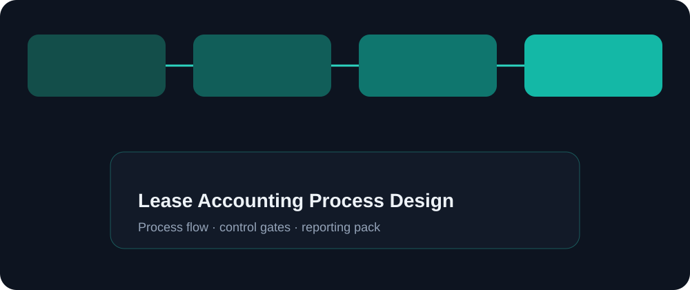

Objective
Design a lease process that finance can operate monthly with clear data ownership and accounting checkpoints.
A process-first lease accounting blueprint — inventory, classification checkpoints, payment schedules, accounting event rhythm, and close disclosures readiness.
Knowledge / portfolio case study only. Not employment history, not a named client engagement, and not a certification claim.
Design a lease process that finance can operate monthly with clear data ownership and accounting checkpoints.
Lease accounting fails when contract data is incomplete or ownership between legal, procurement, and finance is unclear.
Lease inventory model, data checklist, payment & accounting cadence, and disclosure pack notes. Not legal advice.
Build lease register → define required fields → set classification checklist → design payment/accounting calendar → validate journals → prepare disclosure extracts.

Add a sample lease → schedule payments → generate periodic accounting → review GL impact → extract disclosure summary.
No lease goes live without complete critical fields; modifications logged; month-end lease checklist signed.
Shows lease accounting as an operable process, not only a standard reference.